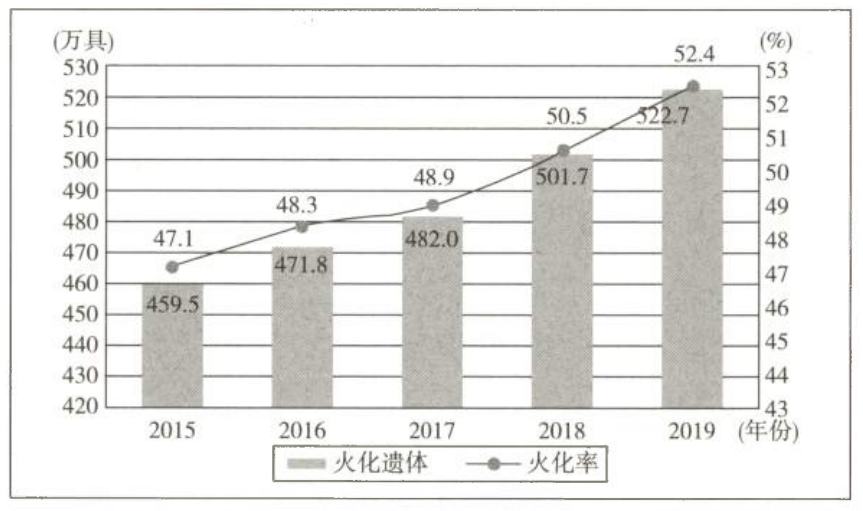
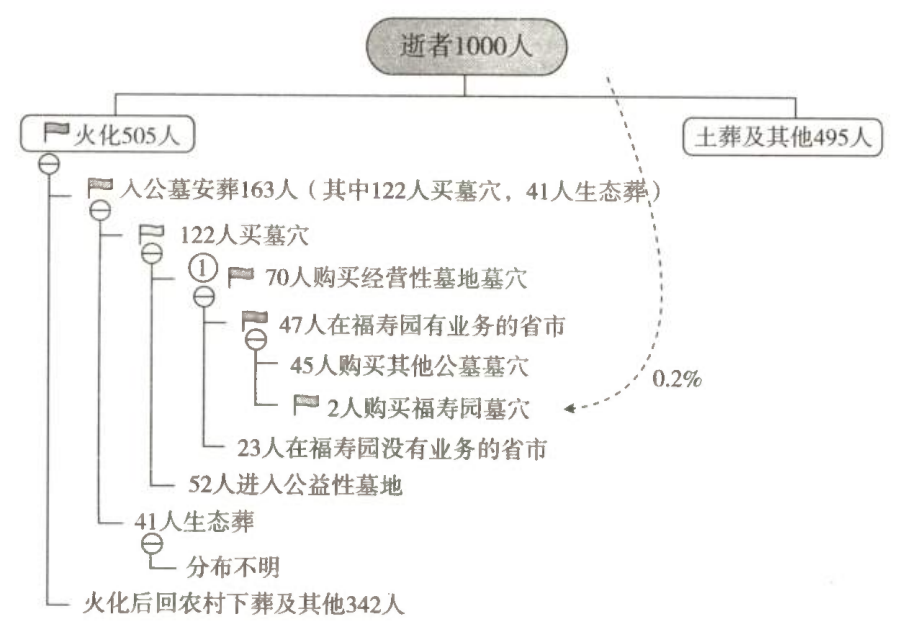
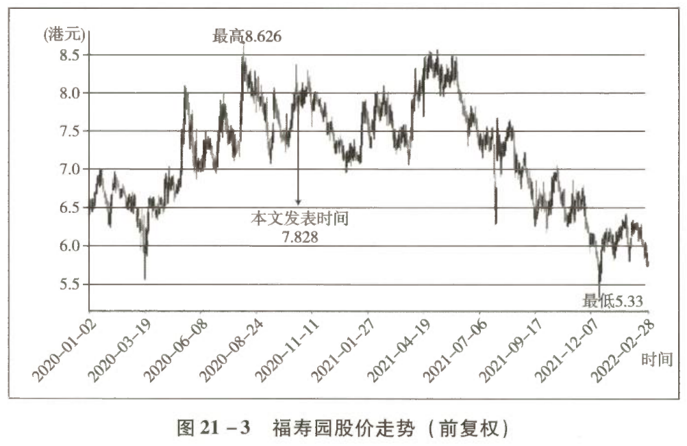

如何从零开始研究一家企业 ——以福寿园为例
面对复杂的财报和海量的信息，我们如何才能抽丝剥茧，看懂一家企业呢？本文以福寿园为例，手把手教大家如何从零开始研究一家企业，数据来源公开可查，逻辑清晰，结论明确，是我们学习研究企业的经典范例。其最大的价值，不是找到了一家可以投资的公司，而是在一起学习的过程中，我们所锻炼出来的研究方法和研究能力。
一、研究框架：如何看懂一家企业
在"唐书房"2017 年 5 月发布的《看得懂与看不懂》一文中，老唐曾写道：当你能够回答下面四个问题时，就代表看懂了这家企业。
| 序号 | 问题 | 实质指向 |
|---|---|---|
| ① | 这家公司靠销售什么商品和服务获取利润？ | 业务与利润来源 |
| ② | 它的客户为何从它这里采购，而不选其他机构的商品或者服务？ | 客户为什么选它 |
| ③ | 资本的天性是逐利。眼看这家公司坐享丰厚利润，为什么其他资本没有提供更高性价比①的商品或服务，抢占它的市场份额，或逼迫它降低利润空间呢？ | 护城河是否存在 |
| ④ | 假设同行挟巨资，或者其他产业巨头挟巨资参与竞争，该公司能否保住甚至继续扩大自己的市场份额？ | 护城河能否持续 |
更高性价比，既可以是同样质量/数量 + 更低价格，也可以是同样价格 + 更高质量/数量。
其实这四个问题就是很多高人喜欢说的"商业模式"，老唐只是把它说得过于简单，显得稍微不那么"高大上"了。
当我们能够回答以上四个问题后，就可以给企业估值了（可以视为问题⑤）。也就是说在老唐看来，研究一家企业的框架，就是回答上述①②③④⑤几个问题。不管从哪个角度切入具体某家企业，万变不离其宗。
二、企业概览：从资产负债表开始
老唐也是刚刚接触这家企业的财报，所以本章主要谈框架和方法，是示范老唐所用的捕鱼之法（且不见得有多高明），而不是介绍这条鱼。尤其是文章中完全可能包含老唐错误或片面的认识，请朋友们千万不要将本文理解为老唐建议在此位置买入福寿园，切记切记！
接下来，老唐以福寿园为例，分享一下从接触一家企业到得出研究结论，应该做的工作和大体的步骤，供朋友们参考。
2.1 第一道筛子：ROE
一般来说，老唐喜欢投过去已经被证明能够赚到丰厚利润，且经过分析后认为未来将继续赚到更丰厚利润的企业；不喜欢那些"虽然现在不赚钱，但是未来可能非常美好"的"梦想窒息"类企业。
因此，我通常用 ROE 作为筛选企业的第一项标准。
| 要点 | 说明 |
|---|---|
| 定义 | 净利润与账面净资产的比值 |
| 含义 | 代表企业对所掌控资源的运用能力 |
| 高 ROE 说明 | 企业利用当前掌控的资源，获取了远超社会无风险收益率的回报水平 |
| 真正的用处 | 高 ROE 是投资者的路标和指示牌，作用是指引我们去发现某种没有被记录在资产负债表、却能给公司带来收入的"经济商誉"资产 |
| 推论 | 具备高经济商誉的企业，往往都有某种竞争优势，值得投资的概率很大 |
2.2 三个口径的 ROE：第一个疑点
以福寿园 2019 年年报为例（为行文简单，数据四舍五入，下同）：
| 口径 | 净资产 | 净利润 | ROE |
|---|---|---|---|
| 全部 | 46 亿元 | 7.4 亿元 | 约 16% |
| 归母 | 40 亿元 | 5.8 亿元 | 约 15% |
| 少数股东 | 5.4 亿元 | 约 1.6 亿元 | ≈ 1.6 ÷ 5.4 × 100% ≈ 30% |
粗看还不错，但也不算特别出彩。真正值得注意的是少数股东的 ROE 约为归母 ROE 的两倍。这意味着两种可能：
- 要么有关联人掏公司腰包；
- 要么是少数股东带有某种没有体现在财报上的特殊资源。
究竟是什么，暂且存疑。
2.3 简化资产负债表
老唐在《手把手教你读财报》第 32 页第一行写道：
长期跟踪"唐书房"的朋友们都知道，几乎分析任何企业，老唐都会首先搞出一份简化的资产负债表，福寿园也不例外。
表 21-1 福寿园简化资产负债表（单位：亿元）
| 资产 | 金额 | 负债及股东权益 | 金额 |
|---|---|---|---|
| 固定资产 | 6.7 | 有息负债 | 0.8 |
| 墓园资产 | 15.2 | 经营负债 | 13.2 |
| 存货 | 4.8 | — 应付 | 6 |
| 类现金 | 25 | — 预收 | 3.8 |
| 商誉 | 4.4 | — 其他 | 3.4 |
| 应收 | 1 | 负债合计 | 14 |
| 其他 | 3 | 股东权益 | 46 |
| 资产总计 | 60 | 负债及股东权益合计 | 60 |
读过《手把手教你读财报》的朋友，看到这份简化报表后，头脑里至少应该想到以下五个企业特征：
| 序号 | 报表现象 | 指向的企业特征 |
|---|---|---|
| ① | 有息负债仅 0.8 亿元 | 企业几乎没有有息负债 |
| ② | 应付 6 亿元 + 预收 3.8 亿元 | 既占用上游资金，也占用下游资金，在产业链上相对强势 |
| ③ | 应收账款仅 1 亿元① | 企业销售主要是预收或现款现货 |
| ④ | 类现金 25 亿元 | 有大量现金沉淀，账面类现金资产超过净资产的一半 |
| ⑤ | 商誉 4.4 亿元 | 企业发生过一次或多次溢价收购 |
当年企业有 18.5 亿元营收，只有 1 亿元应收账款。在阅读财报过程中会发现，这少量的应收款，是因为火化机销售、园林和景观设计以及向地方民政主管部门提供服务所产生的。创造公司年度营业利润 97% 的墓地业务，几乎不产生应收账款。
2.4 顺理成章的三个疑问
沿着这五个要点展开思考，就会产生以下问题：
| 序号 | 疑问 | 解答方向 |
|---|---|---|
| ① | 企业的主营业务是卖墓穴，类似于房地产卖房子。为什么房地产企业普遍高负债、高杠杆运营，而福寿园却近于无杠杆状态运营？它们之间存在什么样的差异呢？ | 见第三部分「供应端」 |
| ② | 净资产回报率超过 15%、盈利几乎全部为现金的生意，为什么要保留大量资金在手，且几乎完全不借款？是什么制约着企业利用更多资本去获取更多利润的能力？ | 见第三部分「囤地待涨」与「土地供应量」 |
| ③ | 企业为什么通过溢价收购来扩张？收购的出价是否有损害小股东利益的情况？在上市公司下属非全资子公司中占少数股份的合作伙伴，凭什么可以得到比上市公司股东更高的回报率呢？ | 见第六部分「真风险」 |
接下来就可以带着这些问题去阅读财报全文了。解开上述疑问的过程，就是我们通常所谈到的"企业研究"。 后文我不再一一引用财报原文，直接说我在财报阅读过程中的思考，涉及供应端、需求端、行业竞争、政策风险、发展空间、管理层风险以及估值前要做的工作等不同层面。
三、供应端：迥异于房地产
从供应端看，这门生意和房地产似乎很像，都是从政府手中拿地，然后加工，卖给客户。但它和房地产生意比较，至少有以下五大区别。
3.1 五大区别总览
| 维度 | 房地产 | 福寿园（经营性公墓） |
|---|---|---|
| ① 土地权属 | 买下 50~70 年土地使用权，建房后将土地使用权和房屋一起卖给客户；续期由客户缴费，土地归客户 | 获得土地使用权，建墓穴后将墓穴使用权租给客户；土地使用权不转让，续期由福寿园缴费，土地仍属福寿园 |
| ② 后续黏性 | 收钱卖房后与土地、房产及居住者切断联系；物业服务近于无差别竞争，本身不赚钱甚至赔钱 | 后续物业服务只能由福寿园提供；逝者及其后人长期、无可选择地与福寿园保持商业往来 |
| ③ 囤地待涨 | 囤地（捂地、捂盘）是政府禁止和打击的行为 | 捂地几乎是政府要求的——政策严格限制提前购买墓穴，土地却一次性划拨/出售给经营者 |
| ④ 土地获取方式 | 土地拍卖是地方政府主要财源，竞争者众多，政策监管严格、地价高昂 | 殡葬用地为受限制用地，绝大部分仍以划拨方式取得，拍卖挂牌占比极小，基本无须高价获得 |
| ⑤ 土地供应量 | 供应源源不断；每一块土地的开发本身还在"催熟"隔壁地块，给自己招来竞争对手 | 按死亡人数预期规划，一次释放后在满足需求的时间跨度内很难再释放新地；投入只提升自家土地附加值，不增加竞争压力 |
3.2 土地权属：卖的是"租约"不是"产权"
绝大部分城市的商品房，客户支付的购房款名义上是购"房"款，实际上主要款项是购买房子脚下的土地。以清水房论，房屋的建安成本大多介于 800~3000 元/平方米，地区差异不大。严格地说，收钱卖掉房子后，房地产公司和这块地、地上的房产及其中的居住者就已经切断联系，分道扬镳了。
福寿园则完全不同：客户购买的墓穴是不附带土地证的。
如果同样用房子来类比说明，福寿园的客户相当于只是一次性交清了 20 年房租及物业费。房子和脚下的土地，法律上的所有权依然属于开发商（福寿园）。
3.3 后续黏性：物业费才是真正的差异
正因为上述土地权属问题，无论是躺在墓穴里的逝者还是其后人，将长期、无可选择地与福寿园保持紧密的联系和商业往来。如果未来不再续交租金，房东（福寿园）是有权利将租客（骨灰盒）驱逐，并将房子重新租给其他房客的。
墓园的维护工作变量很少——享受此项服务的客户基本不提新要求，大体标准化且极少有紧急事件发生。
| 对比项 | 住宅物业 | 墓园物业 |
|---|---|---|
| 服务提供者 | 任何主体都可提供，红海无差别竞争 | 只能由福寿园提供 |
| 服务复杂度 | 琐碎复杂，对人力资源需求很大 | 变量很少，大体标准化 |
| 收费方式 | 按月/按年收取 | 办理"入住"手续时一次性预缴 10~20 年 |
| 单位收费水平 | 基准 | 因墓穴通常仅占地 1~3 平方米，每平方米收费常常是住宅物业标准的数倍甚至数十倍 |
| 利润空间 | 很难有巨大利润空间，甚至赔钱 | 少部分由监管部门监管专项使用，大部分收下就是利润 |
该笔费用少则数百元每年，多则数千元每年，看似不高，但换算成单位面积收费后就相当可观。
3.4 囤地待涨：房地产的禁区，墓园的正道
- 房地产：2020 年 9 月成都市高新区财政局下发文件，禁止区内金融机构向李嘉诚旗下的和记黄埔成都公司及其项目提供新增融资、贷款，禁止为其重大资产重组提供帮助，原因就是该公司存在捂地、捂盘等不良行为。
- 墓园：几乎所有地区都有限制顾客购买墓穴资格的政策——去世后才能买，年龄超过 70 岁或 80 岁才能买，重病才能买，一人去世提前预留其他家庭成员墓穴才能买，等等。
而墓园土地（标准用语为"殡葬用地"）是政府一次性划拨或出售给墓园经营者的。这就必然导致一种房地产行业里被禁止的获利模式，在墓园却是合理合法的，那就是：捂地。
而且奇妙的是，墓园土地可以超出土地使用权最后期限销售。比如福寿园有些墓地的使用权已经卖超（假设土地使用权截止日期是 2020 年 12 月 31 日，但公司可以今天把墓穴卖给顾客，且将管理费用收到 2030 年），但政府相关部门出具书面函件确认不违规。
基本可以确定，未来土地到期后，适当续费就可以继续使用。正因为这样，福寿园的土地大部分是未开发状态（捂地）。毕竟伴随着收入水平的提高，未来墓穴的价格几乎可以预期必然上涨。成本不变、售价上涨，无疑会给公司带来更多利润。
可以统计公司上市以来各个墓园墓穴平均售价的数据，并画出走势图。
3.5 捂地：账面 ROE 不高的真正原因
这正是前文疑问②的答案。举个简化的例子：公司买下 100 单位土地。
| 收益类型 | 来源 | 是否进利润表 | 是否计入 ROE 分子 | 是否计入 ROE 分母 |
|---|---|---|---|---|
| 明的 | 当年销售（租）出去的 5 份土地 | ✅ 记录在利润表 | ✅ 是 | ✅ 全部 100 单位成本计入 |
| 暗的 | 手中所捂的 95 份土地当年的增值 | ❌ 不记录 | ❌ 否 | ✅ 全部 100 单位成本计入 |
企业扩张过程中，不断有资本从产生利息收入的货币基金或金融资产，沉淀为只产生暗收益的墓地资产。正是这个原因，导致即使在超高毛利率的销售数据下，企业的 ROE 看上去却并不怎么诱人。
3.6 土地获取：划拨方式形成的天然护城河
今天我们登录自然资源部不动产登记中心旗下的中国土地市场网，查询殡葬用地，会发现绝大部分依然是划拨方式，拍卖和挂牌出让占比至今仍然极小。
正因为以划拨方式为主，市场参与者基本上就是现有的业内人士——说透彻一点，就是围绕在民政部门周围、长期与殡葬行业相关的团体。这形成了一道双重壁垒：
- 其他投资主体根本无法预期自己能否获得经营原材料（殡葬用地），不可能提前进入这个行业去等地；
- 结果就是真有地的时候，其他市场主体也很难有信息渠道及知识储备、人才储备去及时参与竞争。
由于土地的划拨方式，加上殡葬用地主要以不适宜用于其他用途的土地为主，所以大部分土地价格低廉得超乎想象。查询中国土地市场网的殡葬用地成交价，会发现很多每平方米几元至几百元不等的最新成交记录。
当然，地价还受区域购买力和土地等级差异影响，但与拍卖土地的价格差异不可能夸张到数百倍。区域购买力和土地等级解释不了的价差部分，只能归结为拿地模式的差异。
3.7 土地供应量：数量锁定的生意
殡葬用地的供应逻辑与房地产完全不同：
- 每个地区人口的年度死亡人数，有基本稳定的历史统计数据；
- 未来的预期，也可以根据年龄结构和平均寿命做大致准确的计算；
- 政府据此在土地规划中规划出未来 N 年需要的殡葬用地，通过划拨或出售的方式释放，此时土地成本被提前锁定；
- 然后在该规划基本满足需求的时间跨度里，该城市很难再释放新的殡葬土地。
因此，墓园经营者的每一分投入，除了提高自己所捂土地的附加值外，不会给自己增加竞争压力。从土地供应量角度看行业格局，墓园和房地产行业的原材料供应有天壤之别，这也决定了两者的经营方式有着巨大的差别。
农村荒地、同区域其他墓园，甚至包括一些灵骨塔、庙宇、道观、商品房或小产权房屋以及天葬、海葬、不葬等多种方式，都有可能成为曲线的行业竞争对手。
四、需求端：增长空间显著
在《手把手教你读财报》第 151 页，老唐分享过这样一段话：
4.1 三种增长途径的可靠性排序
| 排序 | 增长途径 | 代价承担者 | 可靠性 | 需要评估的要点 |
|---|---|---|---|---|
| 1 | 潜在需求增长 | 无受损者（仅受益程度不同） | 最高 | 不会遭遇反击 |
| 2 | 市场份额扩大 | 竞争对手受损 | 中 | 竞争对手的反击力度及反击下增长的可持续性 |
| 3 | 价格提升 | 客户付出更多 | 较低 | 消费的替代性强弱（可能迫使客户减少消费或寻找替代品） |
企业面对需求缺口巨大的市场，更容易赚到钱。同样，投资者持有这样的企业，赚钱的难度也会小很多。
4.2 从业务端看需求：钱到底从哪里来
研究需求，首先要明确企业所从事的业务，也就是看懂企业四个问题里的第一个。面对一家陌生公司时，可以直接从财报的"管理层讨论与分析"里获得答案。以福寿园 2019 年年报为例，在第 12 页和第 17 页可以看到企业的收入构成及主要利润来源。
| 业务板块 | 收入贡献 | 营业利润贡献 | 定位与判断 |
|---|---|---|---|
| 墓园服务 | 与殡仪合计占总收入 97% 以上 | 约 97% | 公司真正的利润来源，也是研究重点 |
| 殡仪服务 | 收入不少 | 利润率偏低 | 劳动密集型，人力成本偏高，主要作用类似给墓园引流的配套服务 |
| 其他（环保火化机、设计服务） | 占比很小 | 极小 | 见下文 |
环保火化机业务：福寿园投资 1.8 亿元、于 2015 年 2 月建成的环保火化机生产企业位于安徽省广德市，据说年设计产能 300 台，是国内至今为止唯一产品达到国内环保标准、同时达到欧盟环保标准的火化机企业。
| 要点 | 内容 |
|---|---|
| 市场空间 | 截至 2019 年末，我国现有火化炉 6400 台，绝大部分不符合国家环保标准（环保不达标的火化机会产生令人非常不舒服的气味） |
| 产品竞争力 | 环保排放达标的同时保持绝对竞争力的价格：进口火化机售价一般 300 万~1000 万元，福寿园的只售约 200 万元/台 |
| 销售基数 | 2018 年 12 套，2019 年 18 套 |
投资者对火化机业务的期望值不应太高，可直接将其增长视为安全边际的组成部分，估值时不予考虑。原因有二：
- 殡仪馆本身并没有花钱更换的需求，需求只能来自环保部门的压力；
- 该项业务目前销售基数很小，即便能有迅速增长，按照常识理解，这个产能利用率在很长一段时间里几乎不可能产生什么利润。
至于墓园和殡仪馆的设计业务，直接看作公司自己养的设计施工团队，在完成公司自身业务的闲时"搂草打兔子"捎带做的业务即可，直接忽略。
我们关注的需求，主要是对墓地的需求。其涉及老龄化、城镇化、人均收入的提升及经营性公墓市场份额四个层面。
4.3 层面一：人口老龄化趋势
按照民政部披露的数据，截至 2019 年底：
| 指标 | 人口数 | 占总人口比 |
|---|---|---|
| 60 周岁及以上老年人口 | 25388 万人 | 18.1% |
| 65 周岁及以上老年人口 | 17603 万人 | 12.6% |
老龄化在不断加速（老龄人口增速远远高于人口平均增速）：
| 时间段 | 老龄化程度年均增加 |
|---|---|
| 2001—2010 年 | 每年 0.2 个百分点 |
| 2011—2018 年 | 每年 0.4 个百分点 |
老龄化程度加深，带来的是年度去世人数的增加：
| 时间段 | 年度去世人数 |
|---|---|
| 2000—2009 年 | 年均基本在 850 万左右 |
| 2010—2019 年 | 年均 950 万以上且逐年小幅增长 |
| 2019 年（全年） | 998 万 |
| 2025—2030 年（联合国人口署预测） | 将提升至 1293 万人 |
4.4 层面二：城镇化比率逐年提升
城镇化主要影响的是火化率及对公墓的需求。
农村无论土葬还是火葬，基本上由荒山荒地提供墓园，不构成对墓地的需求（有少量殡仪需求）。火化、殡仪及墓地需求的主要来源是城镇居民。
我国城镇化比率在持续提升，这一点无须数据支撑也可以被感知。按照国家统计局的数据：
| 年份 | 常住人口城镇化率 |
|---|---|
| 1979 年 | 20% |
| 1989 年 | 26.2% |
| 1999 年 | 30.9% |
| 2009 年 | 48.3% |
| 2019 年 | 首次突破 60% |
伴随城镇化的推进，火化率的趋势也是同步提升。

图 21-1 2015—2019 年火化遗体数量与火化率
数据来源：《中国民政统计年鉴》（2019）。
4.5 层面三：人均收入快速提升
2019 年中国人均 GDP 第一次突破 1 万美元，达到 10261 美元，居世界第 80 位，距离全球平均水平 11428 美元仅一步之遥。这是一个值得感恩同时也让人惊讶的数据。老唐读《全球科技通史》一书时，看到这样一段话：
感恩这个时代！我们的命真是好，在几千年苦难史里选中人均收入提升最快的一小段时间，生活标准及财富增长都是几千年未曾有过的速度。
关于"死不起"的辨析：目前情况下，国家财政相对富足，不少城市对于户籍居民基本殡葬费用是全免或予以补贴的。这些基本服务包括遗体运送、消毒防腐、火化及一定年限的骨灰寄存等。如果单纯是这些基本消费，丧事的支出基本上不会超过 2000 元。
所以，在当前环境下，所谓"死不起"更多的是吸引眼球的媒体话术。
4.6 层面四：经营性公墓的市场空间
政府只能为支付能力最差的这部分人兜底，没有义务也没有能力为所有人承担费用。民政部数据显示，近年民政部门管理的公墓总体数量是不断缩减的：
| 时点 | 民政部门管理的公墓数量 |
|---|---|
| 2014 年底 | 1598 个 |
| 2019 年底 | 1431 个（缩减） |
住建部、发改委、民政部 2017 年发布了《城市性公墓建设标准》，对公益性公墓的供应上限也做了明确要求。骨灰安置总量的计算公式为：
其中，系数 20 表示服务年限为 20 年。
表 21-2 城市性公墓建设标准
| 类别 | 骨灰安置总量（个） | 服务人口（万人） |
|---|---|---|
| 一类 | 75001~90000 | >100 |
| 二类 | 45001~75000 | 60~100 |
| 三类 | 15001~45000 | 20~60 |
| 四类 | 5000~15000 | <20 |
以百万人口城市测算（城市公益性公墓的最大建设规模不宜超过一类上限）：
| 步骤 | 测算 | 结果 |
|---|---|---|
| 建设规模 | 按一类上限 | 公墓 7.5 万个 |
| 年均可安置 | 7.5 万 ÷ 20 年 | 约 3600 个/年 |
| 年度死亡人数 | 按约 0.71% 死亡率（14 亿人口，年度平均死亡约 1000 万人） | 约 7100 人/年 |
| 公益性覆盖比例 | 3600 ÷ 7100 | 约一半 |
人口超过 100 万的城市，依然可以按照这个比例建设多个公益性墓地。是单个公墓限制上限为 9 万个，不是总数限制为 9 万个。单个公墓设上限的主要目的是防止单个公墓规模过大，造成清明祭扫期间人流、车流过度集中（统计数据显示，一位逝者平均有 4.5 人拜祭），给交通管理带来不便。
4.7 经营性公墓卖的是"舒坦、体面和差异化"
实际的城市管理中，另外一半需求通常是依赖经营性公墓解决的。同时，作为靠政府补贴甚至提供免费服务的公益性公墓，自然别期望产品和服务的质量有多好，这是市场规律。
| 对比 | 公益性公墓 | 经营性公墓 |
|---|---|---|
| 定位 | 保障基本民生需求 | 提供丧事及长眠之地的舒坦、体面和差异化 |
| 环境预期 | 可能阴森恐怖、交通不便、杂草丛生 | 花园一般 |
| 产品形态 | 单一 | 足够多形态的差异化产品，既可以有"豪宅"，也可以有毫无负担压力的壁葬 |
当人们不具备支付能力的时候，舒坦、体面以及差异化不重要，甚至根本不在考虑范围。但当人们具备了支付能力之后，它们就变得越来越重要了。
行业的一个特殊消费心理：因为我们的文化里一直缺乏坦然面对死亡的相关教育，所以这个行业有个特点——人们几乎不会提前去了解这个行业的价格标准及产品规格，通常都是在刚需出现后，在支付承受力范围内仓促之间作出产品选择。
在以下心理的共同作用下，客户总是倾向于在支付能力之内尽可能选择较高价位的产品：
- 孝道文化
- 歉疚心理（工作忙碌、陪伴老人较少造成的）
- "反正就这一次"
生前契约业务：福寿园最近几年新开发的生前契约业务，正是这种支付能力的体现。人们越来越重视自己身后走得是否体面和舒适，愿意在生前按照自己的支付能力，付费自选多个环节里自己所期望享受到的服务水准。
| 年份 | 生前契约签约人数 | 增速 |
|---|---|---|
| 2017 年 | 1174 | — |
| 2018 年 | 2485 | 约 +112% |
| 2019 年 | 4873 | 约 +96% |
这项业务和保险业的浮存金有点类似。其原创企业、美国上市公司 SCI 账面上可以沉淀远超净资产数倍、金额高达数十亿美元的预收款项。
老龄化 + 城镇化 → 支撑了整体市场的增长；支付能力提升 + 公益性公墓的数量及服务质量约束 → 共同支撑了经营性公墓的未来增长空间。
但其中又能有多少是福寿园可以拿下的呢？
五、面临的竞争：几乎不存在
5.1 较为稳定的政策环境
通过阅读福寿园年报里谈及的殡葬相关政策，以及查阅民政部殡葬管理条例，我们能够发现政府对于殡葬管理的政策实际上算是前后一贯的，可预期性挺强。大致有以下三个方面。
第一，进入殡葬行业的门槛设置，趋势是从严。
无论是殡仪馆还是经营性墓地，进入难度总体趋势是提高。
| 政策文件 | 核心要求 |
|---|---|
| 民政部《殡葬管理条例（征求意见稿）》 | 县级以上地方人民政府应当根据设置规划，优先建立公益性骨灰堂，统筹建设公益性公墓，从严审批建设经营性公墓 |
| 《上海市公墓管理办法》（2018 年 1 月修订发布） | ① 本市对建设公墓施行总量控制；② 对建立公墓实行许可制度，未经批准，不得建立公墓；③ 不得新建公益性公墓；④ 经营性公墓占地面积不得超过 150 亩，不得设立分公墓或分墓区；⑤ 公益性埋葬地占地面积不得超过 2 亩；⑥ 不得扩大公益性公墓的用地…… |
第二，政府不能无限兜底。
政府既没有能力也没有义务给全体城镇居民兜底，只能从保证中低收入群体"死得起"的角度去考虑。而且这些给中低收入者兜底的费用，不能全靠财政拨款，很大部分需要让中高收入者——经营性墓地购买者——承担。
| 原因 | 说明 |
|---|---|
| 取之于民，用之于民 | 满足广大人民群众不同层次的需求——和从商品房销售中抽税收费，用于安置房、廉租房建设同理 |
| 财政本身缺钱 | 民政部门手心向上去向财政讨要，不如"自收自支"来得容易 |
因此，殡葬行业公益性和经营性企业长期共存的局面，看不见打破的可能，无外乎比例问题。民众整体收入下滑、承受力降低、社会舆论反应强烈，比例会略略倾向于更多公益性；反之会倾向于更多经营性。这是可以揣摩的大方向。
第三，不断提升火化率，加强规范化安葬管理。
目前我国火化率约 50%。不断提高火化率，远景目标是火化率无限趋近于 100%，这也是大方向。其中主要原因是为子孙后代节约土地。
5.2 经营性公墓行业的增长空间
在行业进入壁垒高、现有格局变化不大、火化率和规范安葬增加的大环境下，经营性公墓行业整体有多大的空间呢？
从《中国民政统计年鉴》（2019）披露的数据里，老唐选取了 2018 年给福寿园带来主要收入的前五大省市做个示意：上海（53%）、辽宁（11%）、安徽（10%）、河南（6%）、山东（4%）。
注：因民政部 2020 年版统计年鉴还没有出版，无法取得 2019 年详细数据，故采用 2018 年数据。不过一年内总体趋势变化很小，不影响本文要表达的内容。
表 21-3 2018 年 5 省市及全国死亡、火化及安葬统计
| 地区 | 当年火化（具） | 当年销售墓穴（个） | 当年安葬（人） | 节地生态葬（人） | 当年死亡（万人） |
|---|---|---|---|---|---|
| 上海 | 126581 | 83250 | 63133 | 10273 | 13 |
| 辽宁 | 331958 | 81705 | 54357 | 1144 | 33 |
| 安徽 | 289143 | 20537 | 42971 | 3014 | 37.5 |
| 河南 | 131009 | 7037 | 12214 | 277 | 74 |
| 山东 | 659823 | 8820 | 56904 | 26282 | 72 |
| 全国 | 5016890 | 696687 | 1213463 | 402538 | 993 |
通过表 21-3 的相关数据，我们可以看出以下几点。
① 全国火化率约 50.5%（当年火化数 ÷ 当年死亡人数），但各地差异较大。
既有近于 100% 的省市，比如上海和辽宁；也有类似河南这样的农业大省，火化率不足 20%。
② 火化的逝者里，能够在公墓安葬的占比约 32%，计算式为 (1213463 + 402538) ÷ 5016890 × 100% ≈ 32%，但同样存在巨大的地区差异：
| 地区 | 火化逝者进入公墓的比例 |
|---|---|
| 上海 | 高达 58% |
| 辽宁 | 16.7% |
| 安徽 | 15.9% |
| 山东 | 12.6% |
| 河南 | 仅 9.5% |
这些火化但没有进公墓的逝者，一般有四种去向：
| 去向 | 说明 | 占比 |
|---|---|---|
| A | 火葬区的农民回村安葬 | 主要去向 |
| B | 城市居民违规到农村公益性墓地下葬，或直接购买农民的荒坡荒地下葬 | 主要去向 |
| C | 骨灰暂时存放，不下葬 | 主要去向 |
| D | 海葬、河葬或其他自主处理方式 | 较少 |
③ 相对富裕和开放的地方，对节地生态葬接受度较高（草坪葬、树葬、花坛葬、壁葬、塔葬等方式），例如上海、山东；而相对贫穷落后的地区接受度较差，如河南、辽宁接受生态葬的人数都很少，主要还是倾向于墓穴安葬。
5.3 行业整体增速：约年化 8.8%
观察表 21-3 的数据可知，能够给经营性公墓带来增长的空间主要有两块：火化率的提高，以及对城市居民违规下葬农村墓地的打击。这部分增速有多大呢？数据显示并不乐观。
这些事情过去十多年政府一直在推进，但效果并不明显。
| 指标（2006—2018 年，民政部统计范围内的墓地） | 年化增长率 | 含义拆解 |
|---|---|---|
| 墓穴销售数量 | 2.7% | ≈ 年度死亡人数增长 + 火化率提升 + 对城市居民违规下葬的打击 |
| 墓穴销售收入 | 8.8% | 数量 2.7% + 价格增长约年化 6% |
数据来源：该统计数据来自华金研究员。
如果没有什么特别的契机推动，我们看不到 2.7% 这个数字突变的理由。将心比心，若非上级强行要求，民政部门哪位基层员工愿意去和死者家属较劲呢？ 所以，单独这部分带来的增长规模预计不会大。
这两部分暂时都看不到改变因素，因此依然可以采信历史数据去推测未来，即行业整体可能因数量 + 价格，合计带来年化约 8.8% 的整体增长。
接下来要考虑的问题是：整体增长年化 8.8% 之下，行业内部的竞争有多激烈？经营性公墓以及具体到福寿园这家企业预期能实现什么样的增长速度呢？
5.4 几乎没有竞争对手的福寿园
关于竞争，老唐的观点可能稍有点冲击性：福寿园面对的竞争非常弱，甚至可以说福寿园真正的对手只有自己。 先别着急批评老唐乐观，我们先看数据，再说理由。
| 指标（2018 年） | 数据 |
|---|---|
| 福寿园有业务分布的 13 个省、直辖市和自治区，当年销售墓穴总数 | 467170 个 |
| 福寿园当年销售墓穴数量 | 20912 个 |
| 福寿园占比 | 不到 4.5% |
这代表什么含义呢？让我们从 2018 年全国死亡人数 993 万开始（假设为基点 1000），重新捋一遍本文的数据，会发现这样一个逐步分流的过程。

图 21-2 死亡人口殡葬选择分布
分流过程还原（以 1000 人为基点）：
| 分流环节 | 剩余人数 | 依据 |
|---|---|---|
| 全国死亡人数 | 1000 | 2018 年 993 万人 |
| 其中选择火化 | 约 505 | 全国火化率约 50.5% |
| 火化后进入公墓（含墓穴安葬与节地生态葬） | 约 163 | 占火化人数约 32% |
| 其中购买墓穴 | 约 70 | 对应当年全国销售墓穴 696687 个 |
| 所在省市有福寿园业务 | 约 47 | 福寿园业务覆盖 13 个省、直辖市、自治区 |
| 最终成为福寿园客户 | 约 2 | 福寿园销售墓穴占其覆盖省市的比例不到 4.5% |
注：图中从①之后的数据口径略有偏差。这里的 70 人对应的是当年全国销售墓穴 696687 个，但它不一定刚好等于当年安葬人数。实际情况里，既有以前年份买下墓穴、今年用于安放逝者的情况；也有当年买墓穴备用、当年并不下葬的。因无法取得更精确的数据，这里模糊地将两种情况相抵。这样做一定会有误差，但估计数字很小，不影响结论。
5.5 为什么说"分流口不等于竞争"
图 21-2 中每一面小旗都是一个分流口。但这几个分流口，直到"47 人在福寿园有业务的省市"之前，对福寿园来说根本就不存在竞争。
如同从来不存在散酒抢走茅台客户一样：被散酒抢走的，本就不是茅台的客户。
| 分流人群 | 判断 |
|---|---|
| 选择土葬的 | 原本就不可能是福寿园客户 |
| 选择火化后回农村的 | 原本就不可能是福寿园客户 |
| 选择进公益性墓地的低收入人群 | 原本就不可能是福寿园客户 |
| 所在省市没有福寿园墓地的 | 原本就不可能是福寿园客户 |
只有同时满足以下三个条件，才可能是福寿园的潜在客户，才可能轮到考虑竞争问题：
- 福寿园在当地有墓园；
- 逝者家庭为该城市中高收入家庭；
- 家庭愿意为更好的环境和管理支付溢价。
5.6 隔离带：一串并排的佛龛
公墓一般以区县为单位。哪怕是同一个省内，即便某地公墓竞争力更强大、价格更优惠，试图吸引异地客户安葬的难度还是挺高的（包括福寿园想吸引异地安葬其实也挺难）。但一旦确定进入某个区县，对本地中高收入家庭就构成某种事实上的垄断。
不同区域的经营性公墓，表面上看着像对手，但其实它们之间有着巨大的隔离带，更像一串并排的佛龛，各自待在自己的区域里，虽鸡犬之声相闻，但老死不相往来，并无竞争。
同区域内部也是错位的：即便同区域有其他经营性公墓存在，由于总量和人口总数及年度预计逝世人数有比例配比，这些经营性公墓大部分也是错位的，并不构成直接竞争。一旦客户需求属于自己所覆盖的定位区间，客户并没有第二选择——或许仅有处于不同阶层交界处的少量人群例外。
收购环节已经过滤掉了同质化竞争。福寿园管理层曾这样谈及公司 2015 年的收购活动：
一年看了 120 个项目，能进入视线的只有二三十个。那淘汰的近百个项目是因为什么呢？区域内供应过剩或同质化竞争激烈，必然是一个淘汰选项。
从这个意义上说，当福寿园确定进入某区县时，假想中的竞争其实并不存在。福寿园要做的就是坚持将环境、品质、价格和定位持续瞄准那 2‰ 的家庭，用价格隔离非目标客户，静静等待目标客户在没有次优选择的情况下作出选择。
5.7 降维打击：福寿园是行业的"黄埔军校"
更有意思的是，即使有竞争，本身也是一种不公平竞争，是带有某种降维打击含义的竞争。
| 福寿园的行业角色 | 具体事实 |
|---|---|
| 行业培训者 | 担负着引领和提高行业经营水平的重任，多年来持续开办全国现代公墓建设培训班。按公司披露，2019 年已经举办到第 40 期和第 41 期 |
| 行业规则编制者 | 承担部分行业规则的编制工作，比如京津冀三地统一使用的《骨灰节地生态安葬规范》，就是由福寿园总工杨宝祥先生主持编写的 |
培训的老师、标准的编写者对比学生、标准的接受者，这样的竞争角度似乎有点不公平。但没有办法，因为这个行业在我国还比较初级，绝大部分同行还处于"菜鸡"状态。
行业平均水平有多低？ 按照民政部数据，截至 2018 年底：
| 机构类型 | 数量 |
|---|---|
| 殡仪馆 | 1730 个 |
| 公墓 | 1367 个 |
| 殡葬管理机构 | 946 个 |
| 合计 | 4043 个 |
| 主体性质 | 2018 年合计收入 |
|---|---|
| 企业单位 | 123.8 亿元 |
| 事业单位 | 153.4 亿元 |
| 非营利机构 | 2.6 亿元 |
| 加总 | 279.8 亿元 |
平摊一下，大约一家机构年收入不到 692 万元，月收入不足 60 万元。这个平均水平，大概也就是能够支付员工工资和维持机构运转的最低费用吧。
即便是少数龙头，差距仍然巨大：
| 公司 | 关键数据 | 与福寿园对比 |
|---|---|---|
| 福成股份（国内唯一有殡葬业务的 A 股上市公司） | 2019 年殡葬业务营业收入仅 1.85 亿元 | 仅仅是福寿园的 10% |
| 安贤园（港股） | 总市值仅 3.5 亿港元 | — |
| 中国生命集团（港股） | 总市值仅 1 亿港元 | — |
| 福寿园 | 年度营收超 18 亿元，归母净利润近 6 亿元，市值约 180 亿港元 | 完全不是一个级别的对手 |
鉴于地域限制、供应总量控制、产品定位以及竞争对手的弱小等多种因素，福寿园的经营几乎没有什么竞争存在。
如此说来，投资福寿园岂不是高枕无忧、躺着赢钱？当然不是。 对于福寿园来说，风险也是明明白白摆着的。
六、风险：六假三真
福寿园面临什么样的风险这个问题并不深奥，大部分朋友都可以看得见，差异只是每个人对这些风险的理解。老唐将福寿园的潜在风险分为六假三真，共计九种。
| 风险类别 | 定义 | 清单 |
|---|---|---|
| 假风险（6 种） | 实际上出现概率极小或影响可以忽略的风险 | ① 客户放弃续费风险 ② 被灵骨塔、海葬等新方式抢夺市场的风险 ③ 行业暴利带来的舆论风险 ④ 价格管制风险 ⑤ 墓地审批放开，导致供应大量增加的风险 ⑥ 土地续期风险 |
| 真风险（3 种） | 看上去像风险，实际也存在，而且无解，只能承受的风险 | ① 异地扩张风险 ② 政商关系过于紧密的风险 ③ 利益输送风险 |
6.1 假风险①：客户未来不续费
由于墓穴出售时是一次性收取十年或者二十年的管理费用，这笔费用类似于物管费，那么就存在一种到期后是否有人继续缴费的风险。之所以将其视为假风险，因为它是一层窗户纸，一戳就破。
| 层次 | 理由 |
|---|---|
| 第一 | 购买类似福寿园这种高端墓穴的家庭，尤其是花费几十万元甚至更高的价格以艺术墓、定制墓模式安葬长辈的家庭，一定是属于整个社会里收入较高的群体。从概率的角度说，他们十年二十年后沦落到付不起一年几百元或者几千元祖坟物管费的可能性较小 |
| 第二 | 如果真出现上述情况，在墓地位置没有开发完毕的情况下，这些不缴费的少数墓穴对公司的经营也没有什么影响。公司的主要收入是几万元乃至几十万元销售一个墓穴带来的，而不是一年几百元的物管费带来的。在土地未开发完毕的情况下，不缴费的墓穴其实类似于游戏里的免费玩家，起到了"没钱的捧个人场"的作用 |
| 第三 | 假设到了墓地开发后期，真有极少数人无法取得联系，公墓管理方也很容易处理（见下方处置阶梯） |
开发后期的处置阶梯：
- 在墓碑上或墓碑旁边放置缴费提醒；
- 数年后无人回应的，更换为空白墓碑；
- 数年后依然无人回应的，将骨灰盒取出，库房单独保存；
- 数年后依然无人回应的，可重新出售墓穴。
若几十年后有后人找来，缴清拖欠的管理费用后，重新购买墓穴安葬或带走骨灰均可。如此仁至义尽，完全站在道义和法理的一边，用户应该没有什么可说的。整个过程，公墓经营方增加的成本无外乎一间库房，风险可以忽略。
6.2 假风险②：被灵骨塔、海葬等新方式抢夺市场
其他骨灰存放方式，比如灵骨塔、骨灰塔、小产权房屋改造祠堂、海葬、天葬等，会不会抢夺福寿园墓穴的市场呢？两句话就可以戳破这个风险。
| 理由 | 说明 |
|---|---|
| 第一，客户群本就不同 | 中华文化里入土为安始终是主流。福寿园的目标客户主要是愿意入土为安且有支付能力的这部分人群，并不希望吸引那些看重低价的客户群 |
| 第二，若成主流，福寿园反而更强 | 若真是类似灵骨塔等低价集中存放方式成为主流需求，以福寿园的经验和已经打造的环境，做灵骨塔、壁葬、室内集中存放等方式，不仅没有障碍，甚至更具竞争力 |
例如上海福寿园目前就提供几十种殡葬方式，包括塔葬、墓葬、亭葬、别墅葬、树葬、草坪葬、长廊壁葬等，只是部分方式不作为主推品种。因此，这个风险是伪风险。
6.3 假风险③：行业暴利带来的舆论风险
这个比较容易理解，时不时就会有社会新闻炒作天价墓地，或者有财经媒体挖掘殡葬业暴利黑幕，引发社会舆论的关注和讨论。
这种风险倒没有什么好讨论的，就是一时的冲击。媒体热点来得猛、去得快。而且这类"成本才 10 块，售价 100 块"之类的分析，大部分都是缺乏经济学常识导致的瞎忽悠，稍微有点理解能力的专业人士基本上一笑了之。
不仅墓地如此，高端白酒、iPhone、眼镜等多种产品都有类似的媒体吸睛大法，我们慢慢习惯就好。
6.4 假风险④：价格管制风险
我国的商品或服务价格体系分为三种：政府定价、政府指导价、市价。殡葬行业价格体系制定的依据是《国家发展改革委、民政部关于进一步加强殡葬服务收费管理有关问题的指导意见》（发改价格〔2012〕673 号），基本精神可以概括如下：
| 服务类别 | 具体项目 | 定价方式 |
|---|---|---|
| 最基本民生保障 | 遗体运送、冷藏、火化及骨灰寄存 | 政府定价，企业按照定价执行 |
| 衍生服务 | 遗体基本整容化妆、防腐、吊唁场地及设备租赁、殡仪用品及相关服务 | 政府指导价：政府设定基准价格及上下波动范围，或设置最高/最低限价，企业在规定范围内定价 |
| 公益性墓地 | 收费标准 | 地方政府以成本调查为基础，按照非营利原则兼顾居民支付能力核定 |
| 其他墓园（经营性） | 墓穴售价 | 企业自主定价。但主管部门要加强指导和规范，对价格明显偏高的，必要时依法干预，遏制虚高定价 |
| 墓园年度维护管理费 | 按年收取部分 | 当地物价部门按照实际成本 + 合理利润核定 |
这个价格体系的思路非常清晰：政府兜底，保障城镇居民基本民生需求；若希望在此基础上获得更好的服务，则由企业和居民按照市场原则自主交易。
有人担心政府会不会某天对经营性墓地也实施政府定价或者政府指导价，从而导致经营性墓地丧失生存空间。对于这种担心，老唐可以很明确地说：不可能。 逻辑有三：
| 维度 | 论证 |
|---|---|
| 没有必要性 | 政府既没有动机去堵死有支付能力的消费需求，也不可能想办法去减少自己的收入、增加自己的支出。即便有舆论压力，主管部门完全有能力通过打招呼方式，要求企业适度注意价格的合理性，消化舆论压力 |
| 没有普遍性 | 即便偶有过高定价，行业特色也决定了不可能有大量消费者同时提出反对意见（见下方测算） |
| 没有可行性 | 殡葬是一种带有多种配套服务的刚需。若政府管制了墓穴价格，价格完全可能通过石材材质、做工、雕刻、书写、描金、时间、法事、位置、环境乃至各种莫名其妙的风水行为来体现，政府不可能对所有行为一一实施定价 |
"没有普遍性"的量化测算（百万常住人口城市）：
| 环节 | 人数 |
|---|---|
| 年度死亡人数 | 约 7000 人 |
| 其中进公墓的 | 仅约 1140 人 |
| 其中进经营性公墓的（含墓地及生态葬等各种方式） | 不足 780 人 |
| 折合日均 | 2～3 人 |
对于一个百万常住人口的城市，日均两三个人所涉及的事情（且其中可能只有极少部分人对定价不满），很难成为政府办公会议日程表上的事情。
如果政府定价行为真的能压低市场成交价格，那几十年的计划经济就不会搞到"国民经济濒临崩溃"了。所以，所谓政府管制墓地售价的风险，是一种假风险。
6.5 假风险⑤：墓地审批放开，导致市场供应大量增加
这种政策风险老唐无法打包票说肯定没有，但我国的土地政策、殡葬用地的管理方向，是趋向于引导更多人使用节约用地的安葬方式，而不是增加土地去满足这种需求。也就是说，殡葬用地的总体方向是保持土地供应小于真实需求，用行政和市场两种手段，协同达到减少用地的效果。
目前墓地的审批，至少需要三个部门的合力：
- 规划部门 — 土地的规划必须是墓园用途；
- 民政部门 — 审批经营资格；
- 国土部门 — 最后落地。
目前看，严格审批达到减少用地这个大原则，看不到发生改变的可能。因而，审批权放开导致市场供应大量增加的风险也是一种伪风险。局部或许有个案，但不大可能成为趋势。
6.6 假风险⑥：土地续期风险
所谓土地续期风险，简单而言就是公司现有土地到期后是否可以续期，以及用什么价格续期的问题。
福寿园用于经营的土地，无论以划拨形式还是以出售模式，价格都相当便宜（其他同行亦如是）。因而也导致公司出售墓穴的成本构成里，土地成本甚至远低于建墓穴的石板成本。
| 数据 | 内容 |
|---|---|
| 招股说明书披露的上市时土地成本 | 最低 44 元/平方米，最高 562 元/平方米 |
因而，一个显而易见的风险就浮现在眼前了：土地到期后会不会被要求支付高昂地价，否则不予续期？这个问题目前法律上还没有明确说明，只能靠判断。老唐的判断是：这种风险发生的可能性极小。
（1）我国未来土地政策的两种可能
| 可能性 | 内容 | 老唐判断 |
|---|---|---|
| 第一种 | 不等土地到期，卖地模式就发生根本性改变：从一次性支付几十年租金的卖地模式，转化为每年支付房地产市值一定比例的房地产税（物业税）模式 | 可能性较大，且模式变化针对一切土地——住宅、工业、商业、特殊用途用地 |
| 第二种 | 土地到期继续以原价或者微增的价格续期 | 亦有可能 |
我国政府从 20 世纪 80 年代末至今的三十多年里，已经利用土地批租这一模式获取了约 60 万亿元收入，它们支撑了地方政府主导下的城市扩张和发展。但城市的扩张终究会有边界。伴随城市的发展，存量房地产和增量房地产之间的比例会发生变化。当存量远大于增量时，从存量资产上获取财税收入将是政府必然要走的道路。 届时，所谓土地能否续期的问题，就成为了一个伪问题。
（2）若续期是一定的，会以什么价格续期？
答案依然是：概率很小（狮子大开口）。
- 毕竟每个城市的墓地数量不大，抬高墓地价格给政府带来的绝对收入金额很小；
- 而且墓地更多地被视为事关每一个城市家庭的刚需产品，政府大幅提高土地价格势必传导给市民，从而引发舆论压力。
（3）三项佐证
佐证一：招股说明书的法律意见。 在招股说明书第 171 页，公司披露：已售墓地中有大约 19% 墓地服务销售合同截止期限超过了土地所有权的最后期限。原文如下：
佐证二：法理逻辑——卖的是"服务"而非"地"。 地方民政部门出函确认，销售墓地超过土地证截止年限并不违法，这背后依据的是什么呢？是因为福寿园出售的并不是地，而是"我在我的地上挖了一个坑，用石材围起来，让你放置骨灰"的服务。
纯法理角度说，福寿园收了费，如果这块地到期政府不给用了，福寿园在别的地块上挖个坑，照样可以提供原合同约定的服务。所以超出土地证期限收"有个坑帮客户存放和保管骨灰"的费用，并不违法。
但若真的发生土地到期而无法续期，被动的就是民政部门而不是公墓经营者。这相当于民政部门为了钱，刨了老百姓的祖坟，逼迫他们换个地方安埋。这种利益没多少、招骂一大堆的事情，不可能大面积实施。
佐证三：行业实例——到期原价续期。 最近网上就有位于济南边上的一座占地 1640 亩的大型公墓寻求转让的信息。转让资料里清楚地写着：
这段话很可能说明在行业内已经有明确规则：到期原价续期。因此，老唐更倾向于认为墓园土地续期问题也是个伪风险。
6.7 真风险①：异地扩张风险
由于土地政策限制，目前新批经营性墓地的难度极大，所以福寿园的扩张主要有三种模式：
| 序号 | 扩张模式 | 风险与可得性 |
|---|---|---|
| 一 | 收购已有的经营性公墓 | 手持重金的福寿园目前最可靠的主动扩张模式，但风险也集中于此 |
| 二 | 部分城市政府招标改造当地的殡葬设施 | 风险基本可控，但可遇而不可求，很难主动寻找 |
| 三 | 利用 PPP、BOT 及混改等方式和当地政府合作，获得殡葬用地及经营资格 | 同上 |
核心疑问：能持续轻松赚钱的生意，为什么要卖掉？
由于墓地生意具备"地域限制和供应总量限制，土地获取成本极低，客户可选择范围极小，客户多在匆忙中作出选择"等特点，各地的经营性公墓理论上讲都属于能持续轻松赚钱的生意。以常识理解，愿意出售主要有两种情况：
| 情况 | 内容 | 老唐评估 |
|---|---|---|
| 买家出价很高 | 公墓业主觉得卖掉比自己经营更划算。比如福寿园认为自己拿来后通过重新定位、环境改造、专业经营等手段可大幅提升盈利能力 | 理论上有可能，双方或许能在某个合适价格达成一致 |
| 原股东被迫出售 | 单个地区的小规模经营者既没有多地扩张的能力和人才储备，也很难通过营销或大量投入在本地墓地上获得快速增长，大概率会有其他生意存在。当其他生意遇到困境时，墓地可能成为融资工具甚至变现对象 | ⚠️ 可能埋藏隐患：这些墓地可能附带台面以下的或有债务，从而成为收购者吞下的毒资产 |
两个真实案例
| 公司 | 事件 | 结果 |
|---|---|---|
| 福成股份（国内 A 股唯一涉及殡葬行业的上市公司） | 2020 年 9 月 23 日公告：收购湖南韶山天德福地陵园时，原股东提供虚假财务资料、隐瞒部分负债，骗取福成股份签订《增资与股权转让协议》 | 已就原股东的合同诈骗行为报案，公安局已立案侦查 |
| 福寿园 | 2014 年收购婺源万寿山陵园后，发现原股东涉及数十起民间借贷（也可能是非法集资）案件 | 官司一直打到 2020 年中，依然有三宗诉讼未解决，涉及索赔金额共 5230 万元 |
一旦扯上这种事情，不仅仅是公司发展停滞、导致资本投入不产生收益，还有可能承担连带赔偿责任。这是在企业通过收购扩张的过程中，始终可能存在且无法彻底避免的真实风险。
6.8 真风险②：政商关系过于紧密
公司控制人的相关履历让我担心：政商关系太过紧密，从而存在潜在的政治和法律风险。
本条风险具体内容请参看"唐书房"2020 年 11 月 23 日发布的文章《如何从零开始研究一家企业 05》。
6.9 真风险③：利益输送风险
利益输送风险，指公司管理层利用专业知识和实际控制之便，将上市公司利益输送给管理层或管理层控制实体的风险。这个风险从历史、现实和未来三个角度看待。
（1）历史角度：实际控制人白晓江的一次历史污点
2003 年 8 月，白晓江曾因涉嫌贪污、挪用公款被捕，在看守所待了两年后无罪释放。事情大致是这样的：
| 时间 | 事件 |
|---|---|
| 2000 年 | 上海市要修建卢浦大桥。在中福公司白晓江等人的牵线搭桥下，中国船舶工业集团公司、中福等 6 家单位共同组建了卢浦大桥项目公司。中国船舶工业集团公司为最大出资人，占 40%；中福以子公司中福城投的名义出资 26% |
| 过程中 | 中福城投以建设大桥的名义从上海市工商银行南市支行贷款 6000 万元，以暂借款名义汇至卢浦大桥项目公司；然后再以归还暂借款为由，以白晓江等人出资的名义，用于私企鸿福成立时的验资，鸿福就这样成立了 |
| 再后来 | 通过一系列复杂的操作，中福变成了鸿福的全资子公司（而由中国船舶持大股的项目公司居然就配合了）。白晓江当时被捕就是因为挪用这笔 6000 万元的贷款 |
| 2005 年出狱后 | 再次通过复杂操作，将鸿福变成两家非企业组织各持 50% 的股权结构 |
当前财报上呈现的控制链条：
NGO1（上海中民老龄事业开发服务中心）50% ┐
├─→ 鸿福 ──100%──→ 中福 ──→ 福寿园第一大股东
NGO2（上海中民老龄事业咨询服务中心）50% ┘
以招股说明书披露的两家 NGO 的发起人推测，这依然是白晓江控制的实体。[1]
（2）现实角度：股权激励对小股东略有不公
| 项目 | 数据 |
|---|---|
| 上市时间 | 2013 年 12 月 |
| 上市前总股本 | 15 亿股 |
| 发行价 / 发行数量 | 3.33 港元/股 × 5.75 亿股 |
| 出让股权比例 | 5.75 ÷ 20.75 × 100% ≈ 27.71% |
| 融资额 | 3.33 × 5.75 ≈ 19.15 亿港元 |
| 折合上市估值 | 19.15 ÷ 27.71% ≈ 69 亿港元 |
管理层股权激励情况（白晓江、王计生、谈理安及其他人等）：
| 项目 | 数据 |
|---|---|
| 累计获得激励股份 | 超过 2.16 亿股 |
| 认购价格区间 | 最低 3.126 港元，最高 5.824 港元 |
| 综合认购价格 | 4.63 港元/股 |
| 按当前股价约 8 港元计算的额外所得 | （8 − 4.63）× 2.163 亿股 ≈ 7.3 亿港元 |
股权激励过程中，市价与行权价之间的差异，相当于公司为购买员工劳动而支付的工资。它意味着上市七年来，管理层除了工资、花红、董事津贴等收入之外，至少还额外拿走了约 7.3 亿港元。
与二级市场股东的收益对比：
| 主体 | 出资 | 持股比例 | 七年所得 |
|---|---|---|---|
| IPO 二级市场股东（整体） | 19.15 亿港元 | 5.75 ÷ 22.9 × 100% ≈ 25% | 30 × 25% = 7.5 亿元净利润 |
| 原控制人及管理层团队 | — | 约 75% | 22.5 亿元净利润 + 约 7.3 亿港元股权激励奖金 |
我不是说二级市场股东没赚到钱，也不是说管理层不应该拿，而是说管理层通过股权激励模式给自己发放的奖金偏多了。这些钱本质上是由全体股东承担的。
（3）未来角度：并购基金的潜在隐患
2019 年 1 月福寿园成立一家殡葬并购基金，基金规模 8.002 亿元。结构如下：
| 参与方 | 出资 | 角色 | 收益安排 |
|---|---|---|---|
| 永赢（资产规模 226 亿元的基金管理公司） | 承诺 4 亿元 | 优先级出资 | 每年确保得到实际出资 8.5% 的收益，不足部分由福寿园补齐 |
| 福寿园 | 承诺 3.992 亿元 | 出资方 | 扣掉永赢应得的 8.5% 后，得 80% |
| 上海临信资产管理公司 | 100 万元 | 管理人 | 扣掉永赢应得的 8.5% 后，得 20% |
很明显，临信是包赚不赔的大赢家。投资者势必要问：为什么要出让这么大的利益让临信去管理？是福寿园缺钱还是没有殡葬行业并购能力呢？
关联关系疑点：公司公告里说临信是和公司及任何高管或主要股东"概无任何关联的独立第三方"。可是工商资料显示：
- 白晓江担任董事长的中福持有临信 29% 的股份；
- 临信的董事长是 NGO1 的发起人之一吕小平（中福的雇员）。
所以这个"概无关联的独立第三方"表述，显然有问题。
公司的补充说明（2019 年 3 月 11 日补充公告，大体表达四方面意思）：
| 序号 | 公司解释 | 老唐评价 |
|---|---|---|
| ① | 目前殡葬行业的并购目标大部分由国有企业拥有和经营。这些国企与私企（比如福寿园，或许还涉及外资问题）合伙或合作时一般倾向于谨慎。由拥有强大实力、具备大量与国企合作经验的临信管理的并购基金出面，可以大大增加收购成功率 | 在中国殡葬业当前环境下说得通 |
| ② | 某些收购活动可能有些不太符合上市公司监管标准的行动。由基金处理并将其完全合规化后，再由上市公司接手，比较容易满足监管要求 | 同上 |
| ③ | 同等条件下，福寿园拥有优先收购基金并购项目的权利 | 同上 |
| ④ | 中福的确拥有临信的股权，但不参与经营；白晓江的确是中福的董事长，但中福由两家 NGO 拥有，白晓江不享有权益 | ⚠️ 非常勉强 |
至今为止，这个并购基金尚没有实质行动。所以，在上市公司以外建立收购主体，会不会是为了便于输送利益？上市公司会不会扮演项目的高价接盘侠？这类问题目前没有答案，只能观察。
6.10 三种真风险的总结与评价
| 真风险 | 老唐的认识与应对 |
|---|---|
| ① 异地扩张风险 | 始终存在。我们只能寄希望于管理层的专业和尽可能详尽的尽职调查，并承担可能出问题的后果 |
| ② 政商关系风险 | 截至目前只是一种无证据的推测。目的是提醒自己存在这种风险可能，有必要在持股过程中作为一个观察点 |
| ③ 利益输送风险 | 历史回顾说明管理层有利益输送的能力和可能；并购基金尚未发生任何事实，只能作为观察点；唯一确定的是股权激励方案对小股东略有不公 |
总体结论：
所以，老唐的结论是：福寿园是一家值得关注、价格合适可以持有的企业。
七、给一家企业"定性"的方法
本文的分析路径可以概括为四步，其最终目的是回答开篇提出的"看懂一家企业必须回答的四个问题"。通常这个思考过程被称为"定性"。
| 步骤 | 分析内容 | 对应本文 |
|---|---|---|
| ① | 分析福寿园的企业特性（从简化资产负债表切入） | 第二部分 |
| ② | 分析企业面临的市场需求变化趋势 | 第四部分 |
| ③ | 分析供应与竞争情况 | 第三、五部分 |
| ④ | 逐项分析企业面临的真假共 9 种风险 | 第六部分 |
7.1 不必刻意区分定性与定量
老唐不太习惯去区分所谓的定性和定量。在我看来，二者相辅相成，在理解企业的过程中缺一不可：
- 既没有脱离企业经营数据分析的拍脑袋"定性"；
- 也没有不考虑行业环境、企业竞争力，单纯统计财务数字的所谓"定量"。
在理解了企业特性、需求变化趋势、供应竞争趋势以及深入思考了企业面临的风险之后，估值其实是一件并不是很重要，也没什么难度的事情。
鉴于福寿园市值较小、交投清淡，我接受"唐书房"部分朋友的建议，暂时不披露我自己的估值及买卖点。若我后期有超过 0.5% 比例的买入，我会在周记的估值表里披露。
7.2 给进一步研究者的"枯燥"作业
对于有进一步研究意愿的朋友，老唐建议可以去做一些"枯燥"的统计工作——统计福寿园财报披露的每一块墓地的数据：
| 类别 | 需统计的数据项 |
|---|---|
| 基础属性 | 所处城市、墓地面积、单位成本 |
| 开发进度 | 已售面积、可开发面积 |
| 收购定价 | 收购前营收和净利、收购作价、作价对应的估值水平 |
| 收购成效 | 收购后三年营收和净利变化、收购价格相对收购后第三年净利润显示的估值水平 |
希望本文让你有所收获，而不仅仅是让你得到一个代码、打发了一阵无聊时光。我相信这样的深度分享，对于希望提升企业分析能力的朋友来说，是有价值的。
八、补充说明

老唐以均价 6.92 港元买入了 1 万股观察仓。至 2021 年 12 月 16 日，福寿园触及预设买点 5.70 港元，但当时手中没有现金，因此没有买入，截至 2022 年 2 月底，老唐仍持有 1 万股观察仓。